SuperRare is the original Web3 digital art platform, boasting some of the highest sales and most iconic moments in digital art.
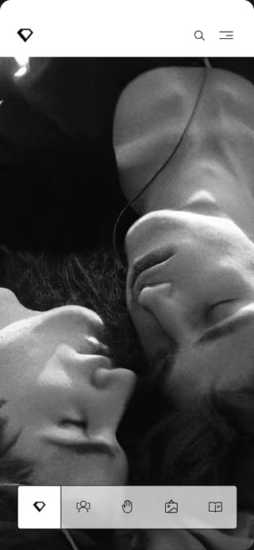
Big Picture
Adapting to a bear market. The data showed our focus should be on high-spending collectors, so we repositioned the business and product to attract the most exciting artists in the space. We rebuilt the core experience around a dynamic list of high-performing artists, focusing on storytelling, community access and visual presentation.
Data Points
- ~70% of artists had dropped off in publishing artwork on a frequent basis.
- Top artists cited that selling artwork for a lower price in a bear market reflects badly on their overall reputation and status, damaging their avg. sale price.
Role
As Head of Design I worked closely with the founders across strategy, product and design—helping set the product vision. I personally designed every part of the product UX, including building and maintaining our design system. I worked with product managers and engineering to consistently ship quality work.
Outcome
Outlasting the market collapse.
- Repositioned the brand firmly as a top-tier art marketplace.
- “Exhibitions” enabled SR to raise artist fees (3% to 15%).
- Robust auction UX continued to drive sales (~38% of total sales).
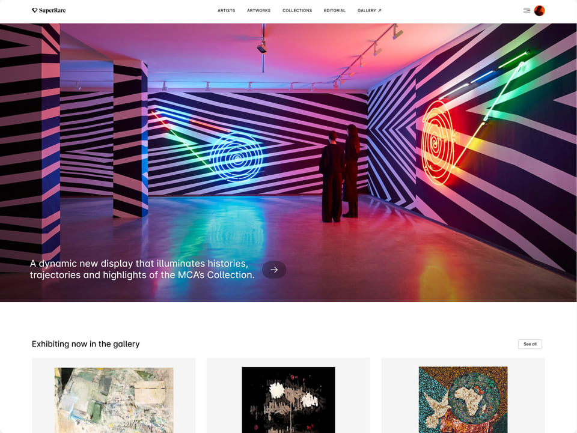
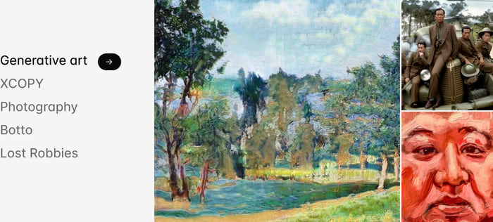
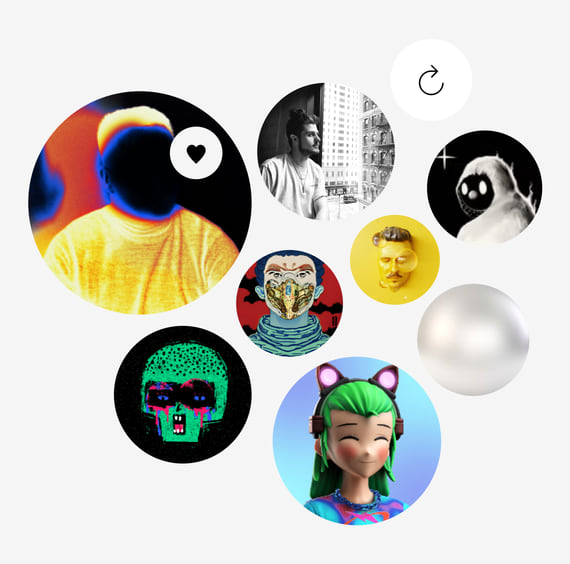
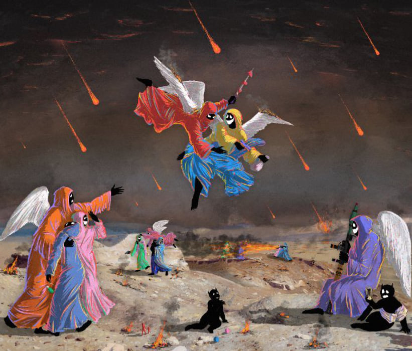
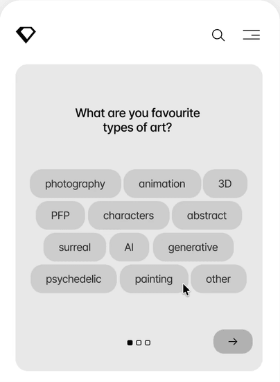
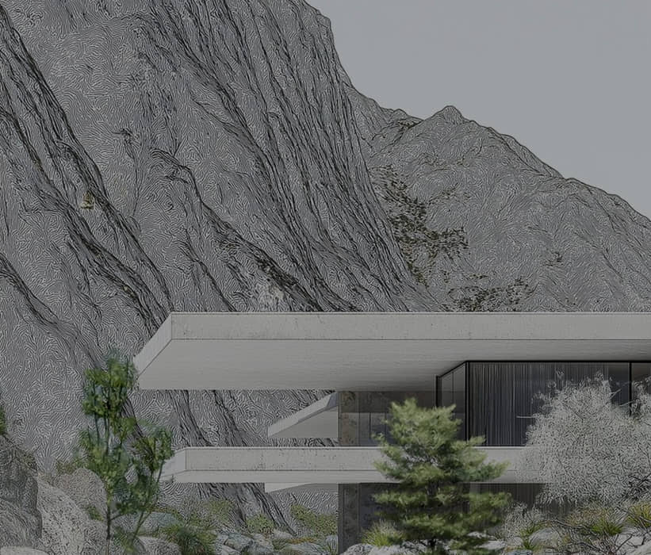
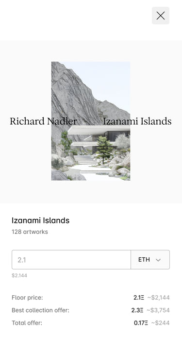
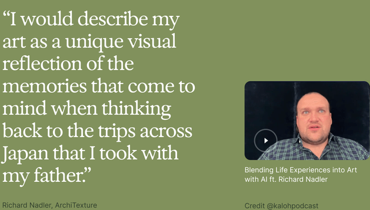
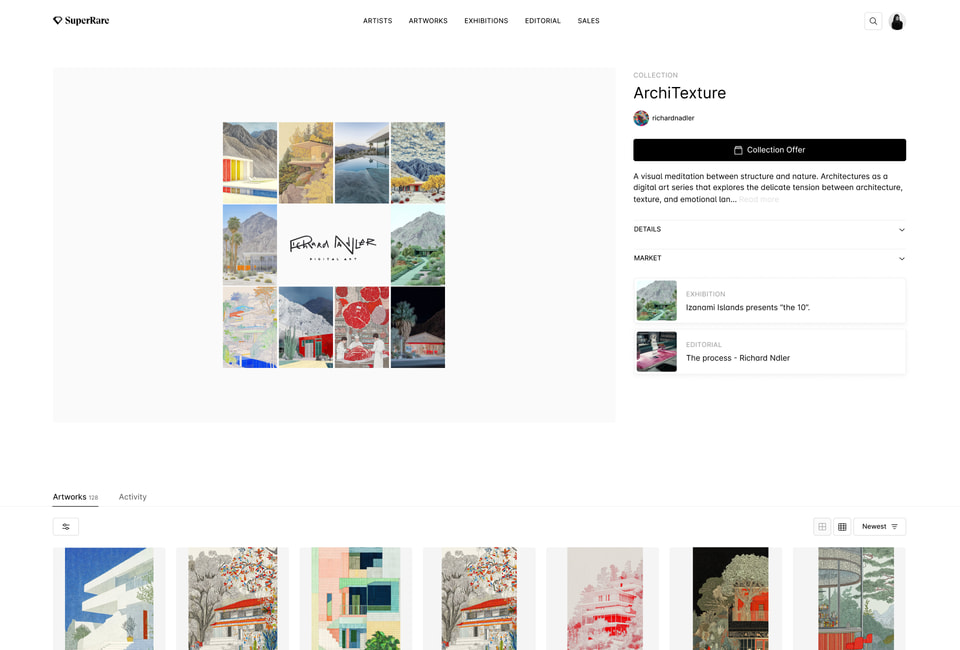
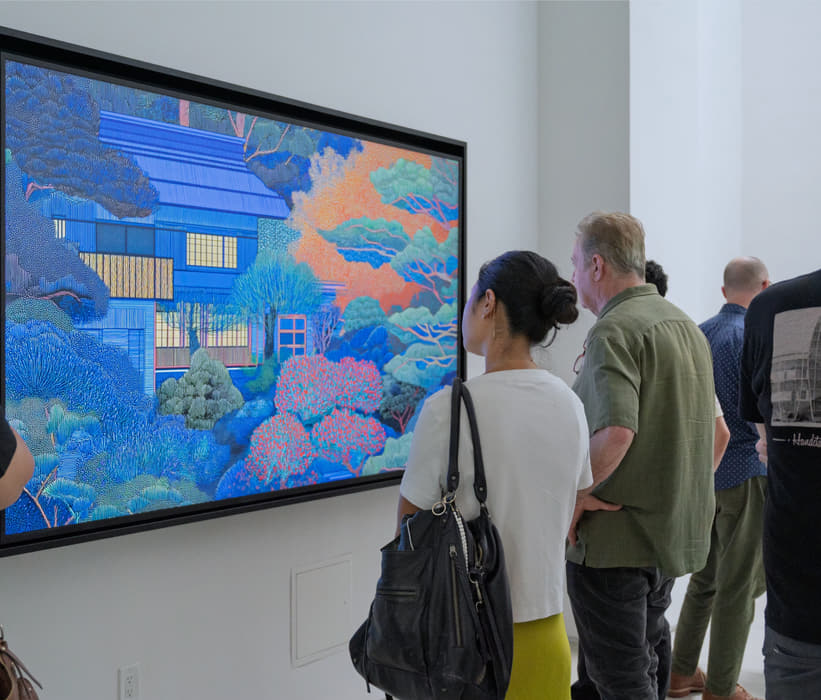
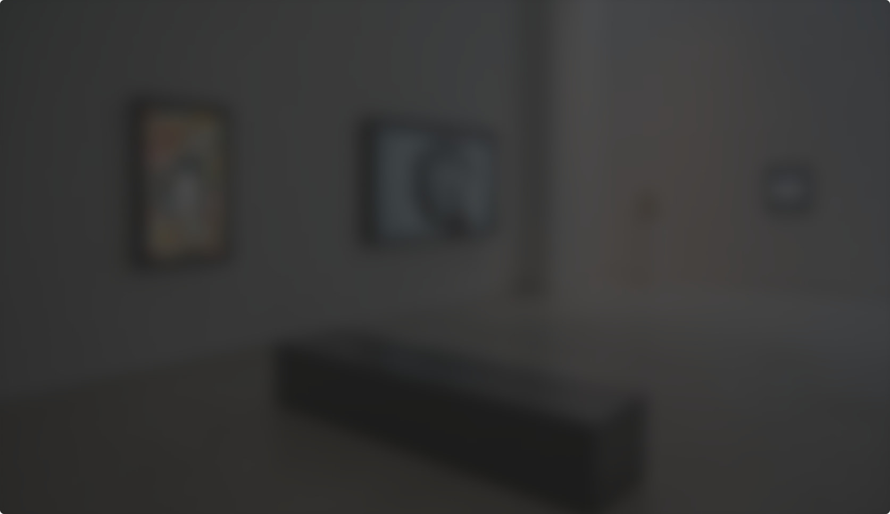
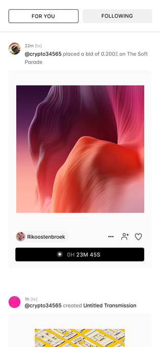
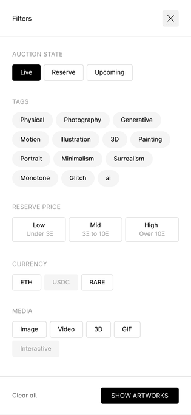
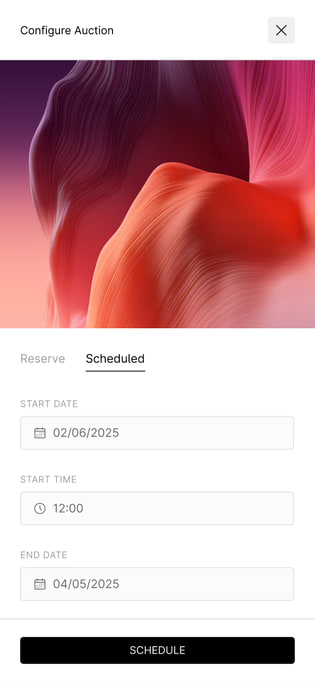
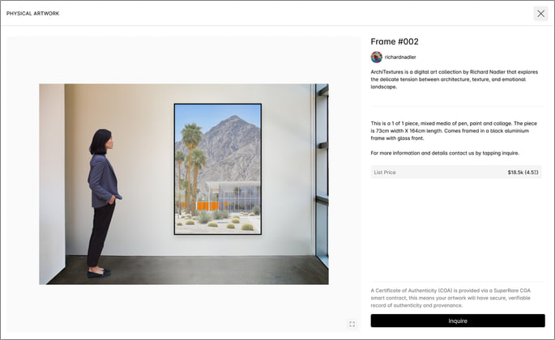
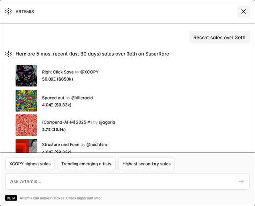
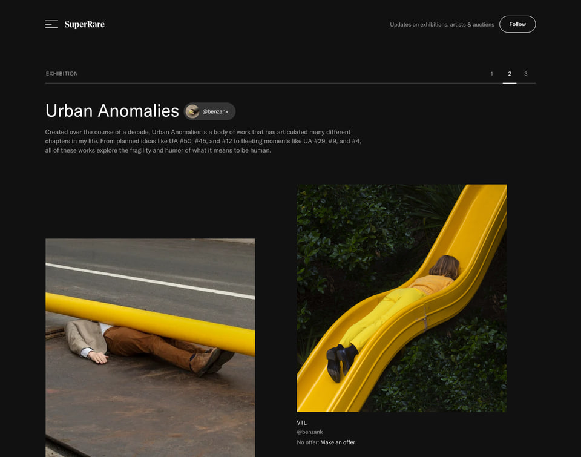
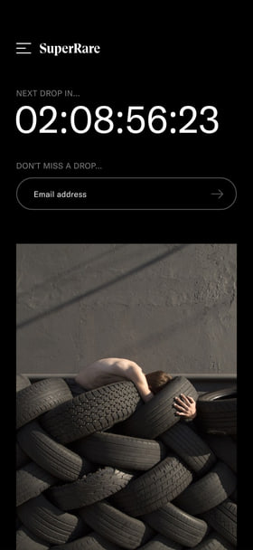